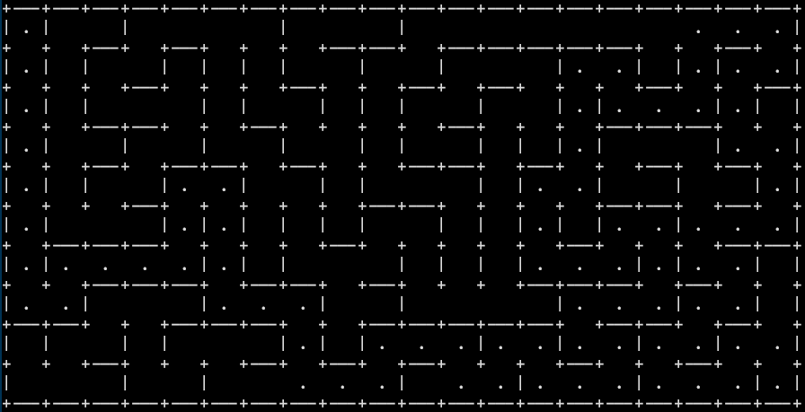

Wie ben ik?
Mijn naam is Tycho Nunnink, ik ben zeventien jaar oud en zit in de zesde klas van het Metis Montessori Lyceum in Amsterdam oost. In de derde klas mocht ik naar de coderclass, waarna het al snel duidelijk werd dat ik het volgende jaar verder kon. Sindsdien heb ik veel geleerd over programmeren en de binnenste werking van computers, en werk ik ook in mijn vrije tijd graag aan programmeren.
Mij bekende programmeertalen
Skills
Projecten
meesterproef-autootje
Als laatste porject voor de coderclass heb ik een op afstand bestuurbaar autootje gemaakt. Deze verstuurt via internet beelden om te zien waar hij heen gaat en is ook over het internet bestuurbaar.security
In de vijfde klas heb ik vooral tijd gespendeerd aan security. Hierbij heb ik geleerd wat voor zwakte punten webservers kunnen hebben en hoe je effectief een progrogramma kan debuggen met gebruik van fuzzingc++-cursus

In de vierde klas kreeg ik een cursus c++ gevolgd van de Vrije Universiteit in Amsterdam. Hierbij hadden we wekelijks een college van Thilo Kielman, waarna we werden beoordeeld voor de assignments. De laatste daarvan, de maze generator, heb ik bovenaan de pagina ook geimplementeerd.
Contact
Ik ben te vinden op Github.Je kan mij natuurlijk ook gewoon mailen.